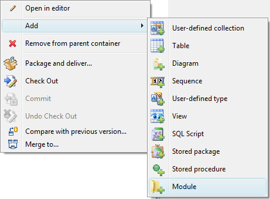
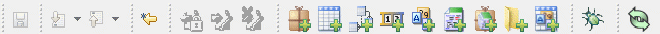
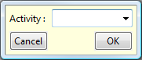
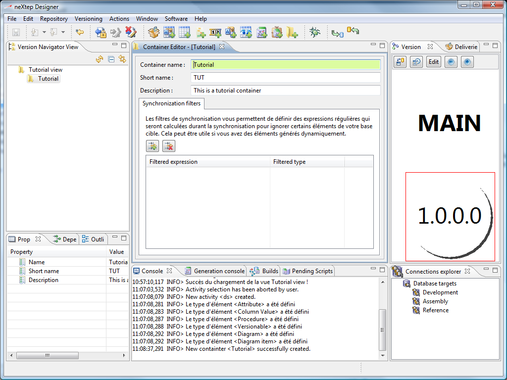

The first concept of neXtep designer is the concept of containers / modules. This notion is used to isolate parts of your application which belong to a same business domain. For example you might have a module which deals with customers, another one which deals with sales, another one which is technical (logs, properties) and so on...
A module is a purely logical isolation. You will be able to deploy all modules in a single database schema if you want. Don't hesitate to have a look to the modules overview in the concepts topic to learn more on what modules will bring to you.
Even though you are free to do what you want, we advise you to always add new elements within a module rather than in the view. This is what we will do in our tutorial. So we right-click on our view in the view navigator, the following popup will come up :

Note that these actions are also available in the workbench toolbar :

And
all the creation actions are available in the Action menu
as well.
Select Create child container, you will now see the version activity dialog. This is because we are creating a new versioned element. Everything in neXtep Designer is under version control. Therefore, each time you create or modify an element, the version activity dialog will come up. However, you can adjust the properties to only show this dialog when checking in elements.

Click OK. The container creation wizard will come up to define container information.
Define the container information as above and click finish to create the new container.
The view navigator will now contain our new container. When you click on it you will be able to see a version tree in the version explorer at the upper-right of the workbench.
